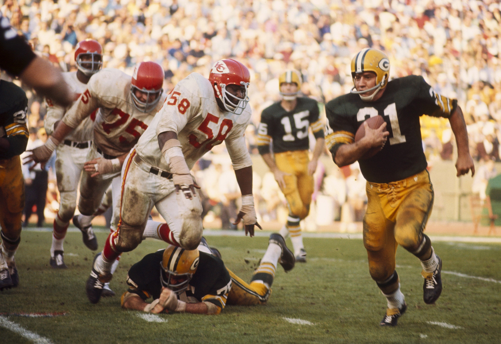
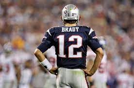

The Super Bowl, the championship game of the National Football League (NFL), has become one of the most-watched sporting events in the United States and around the world. With its combination of high-stakes football, entertainment, and commercial spectacle, the Super Bowl has a rich history dating back to its first iteration in 1967. In this comprehensive overview, we'll explore the history of the Super Bowl and its evolution into a cultural phenomenon.
The Birth of the Super Bowl (1967-1970):
The concept of the Super Bowl was born out of the desire to determine a true champion between the NFL and its rival league, the American Football League (AFL). The two leagues had been in fierce competition for top talent and television contracts. To settle the score, the AFL-NFL World Championship Game was created, later to be known as Super Bowl I. It was played on January 15, 1967, in Los Angeles, California. The Green Bay Packers, representing the NFL, faced off against the Kansas City Chiefs from the AFL. The Packers, led by legendary coach Vince Lombardi and quarterback Bart Starr, won the game 35-10.
In the following year, Super Bowl II took place with the Packers once again victorious, this time over the Oakland Raiders. These early Super Bowls set the stage for the merger of the NFL and AFL, which was announced in 1966 and completed in 1970, creating the modern NFL with two conferences: the National Football Conference (NFC) and the American Football Conference (AFC).
Bowl's Emergence as a Cultural Event (1970-1980):
The 1970s saw the Super Bowl evolving from a championship game into a cultural event. Super Bowl III, in particular, played a significant role in this transformation. It featured a brash young quarterback named Joe Namath guaranteeing victory for his New York Jets over the Baltimore Colts. Namath delivered on his promise, leading the Jets to a stunning 16-7 victory, which helped elevate the Super Bowl's profile and viewership.
The 1970s Super Bowls also began to feature halftime shows with popular musical acts, setting a precedent for the entertainment aspect of the event. Super Bowl X, for example, had the legendary soul singer James Brown as a performer.
Dominance of the Pittsburgh Steelers (1970s):
The Pittsburgh Steelers emerged as a dominant force in the NFL during the 1970s, winning four Super Bowls in six years (Super Bowls IX, X, XIII, and XIV). Led by the "Steel Curtain" defense and quarterback Terry Bradshaw, the Steelers were a powerhouse team that left a lasting impact on the Super Bowl's history.
Super Bowl XIII, played in 1979, featured a memorable showdown between the Steelers and the Dallas Cowboys, widely regarded as one of the greatest Super Bowls. The Steelers won 35-31 in a thrilling game that solidified their legacy and added to the Super Bowl's reputation for high-stakes drama.
The 1980s: A Decade of Dynasties and Memorable Moments:
The 1980s brought more dynasties and iconic moments to the Super Bowl. The San Francisco 49ers, led by quarterback Joe Montana and coach Bill Walsh, won four Super Bowls during the decade (Super Bowls XVI, XIX, XXIII, and XXIV), establishing themselves as one of the most successful franchises in NFL history.
Super Bowl XX, in 1986, is often remembered for the dominant performance of the Chicago Bears, whose defense, led by the legendary Mike Ditka and players like William "The Refrigerator" Perry, crushed the New England Patriots 46-10. It was a moment that showcased the Bears' "Super Bowl Shuffle" and the integration of pop culture into the Super Bowl experience.
The 1990s: Emergence of the Buffalo Bills and the Dallas Cowboys:
The Buffalo Bills made four consecutive Super Bowl appearances from 1990 to 1993, a remarkable feat that is also marred by their inability to secure a single championship during that stretch. The Bills lost all four of those Super Bowls, a record that still haunts the franchise.
The 1990s were also marked by the resurgence of the Dallas Cowboys under the leadership of owner Jerry Jones and coach Jimmy Johnson. The Cowboys won three Super Bowls in the decade (Super Bowls XXVII, XXVIII, and XXX), with a team featuring Hall of Famers like Troy Aikman, Emmitt Smith, and Michael Irvin.
The Turn of the Millennium (2000s):
The New England Patriots, led by head coach Bill Belichick and quarterback Tom Brady, emerged as a dominant force in the 2000s. The Patriots won three Super Bowls in four years (Super Bowls XXXVI, XXXVIII, and XXXIX) and established themselves as one of the most successful franchises in the history of the NFL. The "Dynasty of the Decade" was characterized by a focus on defense, timely plays, and the emergence of a quarterback who would go on to become one of the greatest of all time.
2010s: The Era of Brady and the New Generation:
The 2010s saw the continuation of the New England Patriots' dominance, with Tom Brady leading the team to three more Super Bowl victories (Super Bowls XLIX, LI, and LIII), solidifying his status as one of the greatest quarterbacks in NFL history. The Patriots' Super Bowl LI comeback against the Atlanta Falcons, in which they erased a 28-3 deficit to win in overtime, remains one of the most remarkable moments in Super Bowl history.
The 2010s also saw the emergence of new NFL stars and a shift in power. The Seattle Seahawks, with their ferocious "Legion of Boom" defense, won Super Bowl XLVIII, while the Philadelphia Eagles, led by backup quarterback Nick Foles, secured their first Super Bowl victory in Super Bowl LII.
The 2020s and Beyond: The Super Bowl's Ongoing Evolution:
As the Super Bowl moves into the 2020s, it continues to be a cultural phenomenon, blending world-class football with star-studded halftime shows, and the most expensive and highly anticipated commercials of the year. It remains a reflection of American culture and its ability to bring people together for a shared experience, transcending its status as a mere sporting event.
In conclusion, the Super Bowl has come a long way since its inception in 1967. It has evolved from a competition between two rival football leagues to a global cultural spectacle that captivates audiences worldwide. From the dominance of dynasties like the Green Bay Packers, Pittsburgh Steelers, and New England Patriots to the emergence of new stars and unforgettable moments, the Super Bowl's history is a testament to the enduring appeal of American football and its ability to unite people in celebration and competition.

